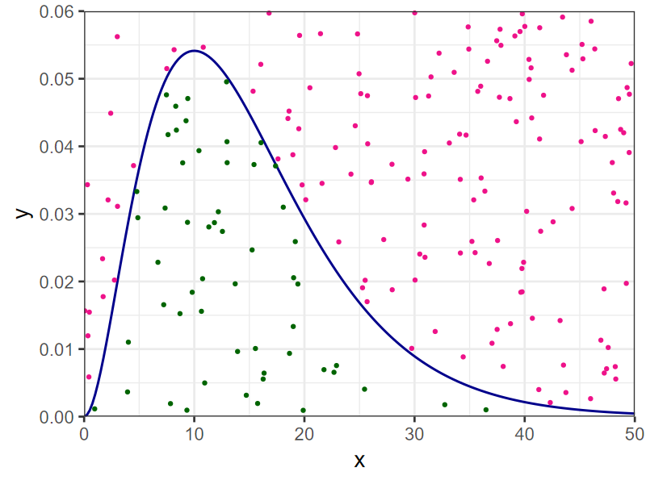

Exercises with Estimation
EES 4891/5891
Probability & Statistics for Geosciences
Jonathan Gilligan
Class #13: Tuesday, February 18 2025
Learning Goals
Learning Goals
- Understand what Bayes’s theorem means
- Understand the different terms:
- Likelihood
- Prior distribution
- Evidence
- Posterior distribution
- Understand how Bayesian methods iteratively improving estimates as you get more data.
- Understand difficulties in applying Bayesian methods
- Choosing priors
- Solving integrals
- Recognize the major methods for solving Bayesian integrals
- Conjugate Priors
- Monte-Carlo
- Understand differences between Bayesian and Maximum Likelihood
estimation.
- Bayesian credibility interval estimates vs. frequentist confidence interval estimates
Getting Started
Getting Started
-
Go to the GitHub Classroom assignment at https://classroom.github.com/a/q_7M5SKb and accept the assignment
Open RStudio and create a project using version control from the GitHub repository for your assignment.
Semester Project
- I will post the assignment later this week
- The big picture is:
- You will pick a data set you’re interested in.
- I can meet with you or consult by email to help you
- You will examine the variables in your data set:
- What is the distribution like?
- Can you estimate parameters for the distribution?
- Use the data set to ask research questions:
- Write a report describing your data set and what you learned from it
- Examples of Research Questions:
- Are variables for some parts of the data set distributed differently
from others?
- e.g., was the distribution of droughts different in the Little Ice Age than in the Medieval Warm Period?
- Use statistical tests for difference
- Is there a relation between different variables?
- Covariance and Correlation
- Regression Analysis
- Principal Components Analysis
- Are there spatial or temporal patterns?
- Seasonality
- Autocorrelation
- Are variables for some parts of the data set distributed differently
from others?
Announcements:
- Reminder: I will be away next week
- No class Feb. 25 & 27
- I will post video lectures for the classes I miss
- Homework #4 will be due Thursday March 6, after I return
Bayesian Estimation
The Problem with Likelihood
Likelihood \(L(X | \theta) = L(x_1, x_2, ..., x_N | \theta)\) tells you the probability that you will observe data \(x_i\) if the parameter \(\theta\) has a certain value.
What you really want to know is the probability \(P(\theta | X)\) that the parameter \(\theta\) will have a certain value if you observe data \(x_1, x_2, \ldots, x_N\).
-
Bayes’s Theorem relates this probability to the likelihood:
\[ \underbrace{P(\theta | X)}_{\text{Posterior}} = \frac{\overbrace{P(X | \theta)}^{\text{Likelihood}}\quad \overbrace{P(\theta)}^{\text{Prior}}} {\underbrace{P(X)}_{\text{Evidence}}} \]
- The textbook provides alternate names:
- The likelihood \(P(X | \theta)\) can also be called the data distribution
- The evidence \(P(X)\) can also be called the marginal distribution
- Posterior and prior are short for posterior distribution and prior distribution
- This points out a big challenge: If you use maximum likelihood estimation to estimate the value of \(\theta\), you don’t know the probability that the result \(\theta_{\text{MLE}}\) is the true value of \(\theta\) unless you also know the prior \(P(\theta)\) and the evidence \(P(X)\)
Bayes’s Theorem
-
Bayes’s Theorem:
\[ \underbrace{P(\theta | X)}_{\text{Posterior}} = \frac{\overbrace{P(X | \theta)}^{\text{Likelihood}}\quad \overbrace{P(\theta)}^{\text{Prior}}} {\underbrace{P(X)}_{\text{Evidence}}} \]
- What do the posterior, likelihood,
prior and evidence mean?
- Likelihood: \(P(X | \theta)\) is the probability that you would observe data \(X\) if \(\theta\) has a certain value.
- Prior: \(P(\theta)\) is the probability distribution for \(\theta\), based on everything you knew before you make new observations.
- What do the posterior, likelihood,
prior and evidence mean?
- What do the posterior, likelihood,
prior and evidence mean?
-
Evidence: \(P(X)\) is the probability of observing \(X\), regardless of the value of \(\theta\). It can be written
\[ P(X) = \int_{-\infty}^{\infty} P(X | \theta) P(\theta)\: \mathrm{d}\theta, \] The integral of the likelihood times the prior.
Posterior: \(P(\theta | X)\) is an updated probability distribution for \(\theta\), incorporating the new information you learned from your observations \(X\).
-
Interpreting Bayes’s Theorem
- You start out with some sense of the plausible range of values for
\(\theta\), and maybe that some values
are more likely than others.
- This is your prior.
- You make a new measurement.
- Use the new measurement to update your prior into a posterior
- Now the posterior from your previous measurement
becomes the prior for your next measurement.
- Use the new measurement to update your current prior into a new posterior.
- Repeat:
- Every time you make a new measurement, you use the previous posterior as the prior and combine that with the new data to create an updated posterior.
Example: What Fraction of the Earth is Water?
What Fraction of the Earth is Water?
- You have a globe and want to figure out what fraction of the earth’s surface is water.
- Toss the globe in the air, catch it, and note whether your index finger is on water or land: outcomes are W and L.
- At every toss, use Bayes’s theorem to update your estimate of the fraction that is water.

First toss
- \(\theta\) is the fraction of the earth’s surface covered by water
- Before the first toss, pick a prior probability distribution for the fraction that’s water.
- Suppose we don’t know anything.
- Pick \(\mathbb{P}(\theta) = \text{Uniform}(0,1)\), a uniform prior:
- Toss the globe and your finger lands on water.
- Update the probability: \[ P(\theta|W) = \frac{P(W|\theta) P(\theta)}{p(W)},\] where p is the probability of water, and W is measuring water.
Prior:
The calculation:
\[ P(\theta|W) = \frac{P(W|\theta) P(\theta)}{P(W)},\]
- \(P(W|\theta) = \theta\)
- \(P(\theta) = 1\) (it’s a uniform distribution \[\begin{aligned} P(W) &= \int_0^1 P(W|\theta) P(\theta) \:\mathrm{d}\theta = \int_0^1 \theta \times 1 \:\mathrm{d}\theta \\ &= \left. \frac{\theta^2}{2} \right|_0^1 = \frac{1}{2} \end{aligned} \]
- so the posterior \(P(\theta|W) = 2\theta\)
- Use this posterior as the prior for the next toss…
Subsequent tosses
Bayesian Estimation:
- Maximum Likelihood Estimation gives you a point estimate for \(\theta\).
- Bayesian Estimation gives you the whole posterior probability
distribution for \(\theta\)
-
Interval Estimation: Use the posterior to esstimate the Credible Interval that contains a certain fraction of the posterior probability density
-
- You could draw many possible 90% credible intervals.
- We usually use the Smallest Credible Interval, also known as the Highest Density Interval.
- Credible Intervals vs. Confidence Intervals
- Bayesian: 90% Credible Interval for \(\theta\) means there is a 90% probability that the true value of \(\theta\) is within the interval
-
Frequentist: 90% Confidence Interval means
that if you repeat the experiment many times and calculate the 90%
confidence interval for each experiment, the true value of
\(\theta\) will be within the
confidence interval for 90% of the experiments.
- It doesn’t say anything about the probability that your experiment is in the 90% or the 10%.
Challenges for Bayesian Methods
Challenges for Bayesian Methods
- Selecting a prior:
- Before you make your first measurement, how do you choose a prior?
- Uniform prior?
- Works if \(\theta\) must lie within a finite range
- Makes the fewest assumptions about \(\theta\)
- Other function?
- Criticism of subjectivity:
- You can get any result you want by choosing a suitable prior.
- Rebuttal: You usually know something.
- If a potential result would not be believable, your prior should
exclude it
- A rock can’t be 12 billion years old.
- Past climates can’t have global temperature \(> 100^\circ\mathrm{C}\).
- If a potential result would not be believable, your prior should
exclude it
- Criticism of subjectivity:
-
Computing the evidence
\[ P(X) = \int_{-\infty}^{\infty} P(X | \theta) P(\theta) \:\mathrm{d}\theta \]
- Integrals can be hard to solve
- Conjugate Priors:
- Many likelihood functions \(P(X | \theta)\) have conjugate priors \(P(\theta)\) that have known evidence integrals
- Numerical Integration:
- Computers can approximately solve integrals that can’t be solved analytically.
Conjugate Priors
| Likelihood, \(\theta\) | Conjugate Prior | Posterior |
|---|---|---|
| Binomial, \(k\) | Beta | Beta Binomial |
| Poisson, \(\lambda\) (rate) | Gamma | Negative Binomial |
| Normal, \(\mu\) | Normal | Normal |
| Normal, \(\sigma^2\) | Inverse Gamma | Student \(t\) |
| Exponential, \(\lambda\) (rate) | Gamma | Lomax |
| Gamma, \(\theta\) (scale) | Inverse Gamma | Compound Gamma |
- Problems:
- Not all likelihoods have conjugate priors
- Conjugate prior may not be a good representation of what you know about \(\theta\).
Numerical Integration
- Monte Carlo Integration
Invented around 1946 by Stanislaw Ulam for designing nuclear bombs
-
To solve
\[ \int_a^b f(x) \: \mathrm{d}x \]
- Plot \(f(x)\) from \(a\) to \(b\), and choose numbers \(c\) and \(d\), so \(f(x)\) is between \(c\) and \(d\)
- Pick \(N\) pairs of random numbers \((x_i, y_i)\) where \(x_i\) is between \(a\) and \(b\), and \(y_i\) is between \(c\) and \(d\)
- Count the number that lie on or below the function: \(y_i \le f(x_i)\)
- \[\int_a^b f(x) \:\mathrm{d}x \approx (b - a) (d - c) \frac{N_{below}}{N}\]
Example
\[f(x) = \text{Gamma}(x, \text{shape} = 3, \text{scale} = 5)\]

Sample 200 points with \(a = 0\), \(b = 50\), \(c = 0\), and \(d = 0.06\).
-
\(N_{\text{below}} = 55\), so our estimate of the integral is
\[ \frac{55}{200} \times (50 - 0) (0.06 - 0) = 0.825 \]
We can use R to figure out the actual value of the integral: \(\texttt{pgamma(50, shape=3, scale=5)} = 1.000\).
-
If we repeat with \(N = 1000\), we get \(N_{\text{below}} = 323\), and our estimte of the integral is
\[ \frac{323}{1000} \times (50 - 0) (0.06 - 0) = 0.969 \]
Challenges with Monte-Carlo Integration
- Monte-Carlo methods are very easy for integrating over one variable (one-dimensional integrals).
- But many statistical analyses have many parameters
- Advanced regression analyses may have dozens or even hundreds of parameters.
- This means doing an integral in dozens or hundreds of dimensions.
- The curse of dimensionality says that it’s very hard to
sample efficiently in more than a few dimensions.
- It took 1000 samples to get close to the correct value of the integral in our example
- To achieve similar coverage in 10 dimensions would require \(10^10\) samples: 10 billion samples.
- There are more efficient methods of sampling than just picking random numbers
- But the curse of dimensionality is still a problem.
- The biggest obstacle to Bayesian analysis is the computational work needed to solve the evidence integral.